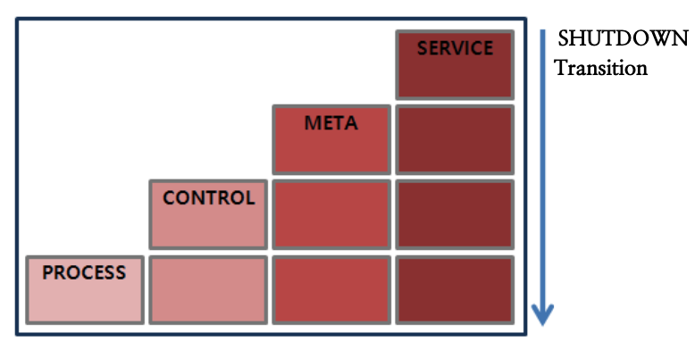
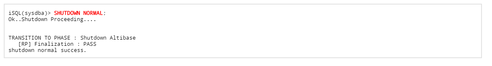
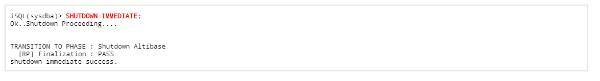
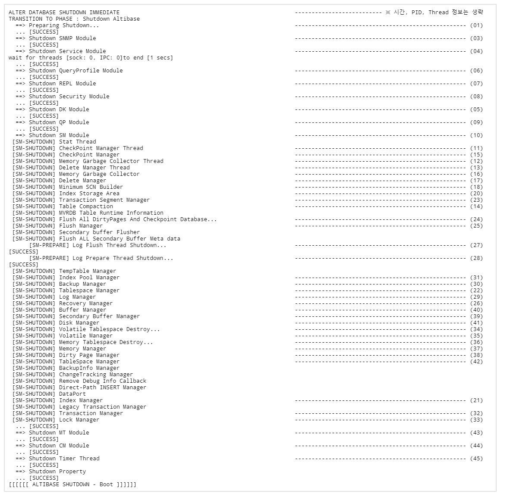

This chapter describes the outline and features of shutting Altibase and three options of shutting down provided by Altibase and operations.
Overview
The starting process of Altibase is classified into 4 stages, but when it is to shut down, it is in reverse order of the startup process and ends in stage 1. (SERVICE -> META -> CONTROL -> PROCESS)
To shut down the running Altibase server, connect to iSQL with -sysdba privileges and use the "SHUTDOWN" command.
The "SHUTDOWN" command can be used by specifying three options (NORMAL, IMMEDIATE, ABORT).
NORMAL, IMMEDIATE can be executed only when Altibase is in SERVICE stage, and ABORT can be executed at any stage.
The stop command of Altibase can be executed only with the installed OS account.

NORMAL
As a method of shutting down the server normally, the server waits for a shutdown operation until all clients are disconnected from the server.
The NORMAL option shuts down the Altibase server after internally performing tasks such as terminating the thread that detects the communication session between the client and the server, terminating the service thread, and terminating the data storage manager.
When the Altibase is shut down using the NORMAL option, the following message will be displayed.

The following are the operations Altibase performs when the Altibase server is shut down using the NORMAL option.
- Check if the current user has sysdba privileges
- Wait until all sessions have ended
- Shut down each module (Storage Manager, Query Processor, Communication Manager, etc.)
- Shut down Altibase process
IMMEDIATE
After forcibly disconnecting currently connected sessions, the Altibase server rolls back the currently running transaction and shut down the Altibase server.
When the server is shut down using the "SERVER STOP" command provided by Altibase, the same operation as the shutdown using the IMMEDIATE option is performed.
When the Altibase server is shut down using the IMMEDIATE option, the following message will be displayed.

The following are the operations Altibase performs when the Altibase server is shut down using the IMMEDIATE option.
- Check if the current user has sysdba privileges
- Kill all currently connected sessions
- Rollback the currently executing transaction
- Shut down each module (Storage Manager, Query Processor, Communication Manager, etc.)
- Shut down Altibase Process

- Internal operating during "SHUTDOWN IMMEDIATE"
Looking at the altibase_boot.log, stopping is terminated by performing the process in the reverse order of when it is started. The operations that Altibase internally operates during "SHUTDOWN IMMEDIATE" are as follows.- Prepare for stopping and terminate for each module
- Termination of modules such as SERVICE, Database Link, Security, Query Processor, Storage Manager, etc. (02) ~ (10)
- Release all resources used during the server operation
- Checkpoint Manager, Memory Garbage Collector, Delete Manager, etc. (11) ~ (42)
- Table Compaction (14)
- After allocating in memory, return the unreturned space to the system
- Flush All Dirty Pages And Checkpoint Database (24)
- Flush to disk for Dirty Pages among pages loaded in the memory buffer
- Checkpoint data in memory tablespace
- When there are more objects that need to be flushed and objects that need to be checkpointed, the waiting time increases when stopped.
- Prepare for stopping and terminate for each module
ABORT
This is a method of forcibly shutting the Altibase server down using the kill -9 system command.
If the Altibase server is shut down with this method, the consistency of the database cannot be guaranteed. Therefore, when the Altibase server is started, a database recovery process is performed.
The following operations performed by Altibase when the Altibase server is shut down using the ABORT option.
- Check if the current user has sysdba privileges
- Send kill-9 to the server process
- Wait for the server process to terminate
{kind=link}
{kind=link}
{kind=link}
{kind=link}